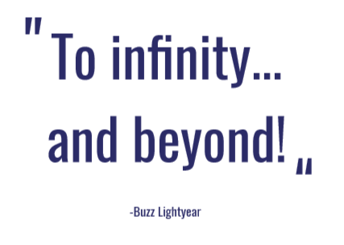
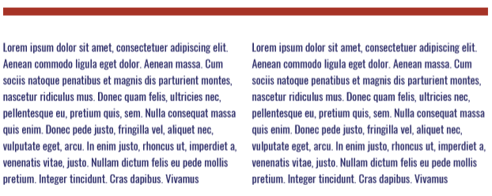
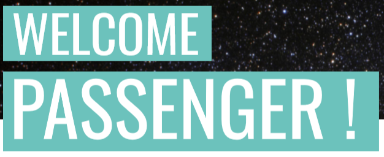
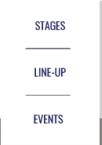
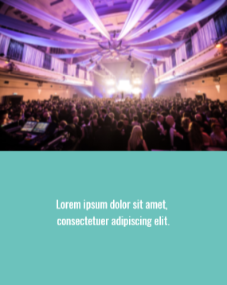
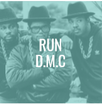
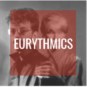
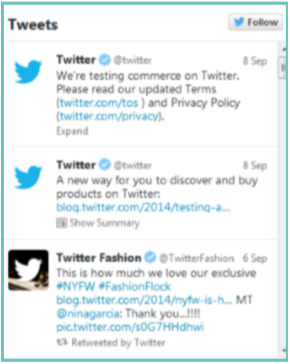
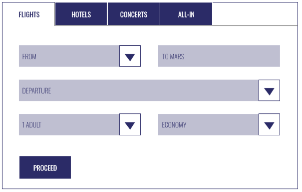

1.KLEUREN

Vooral wit (FFFF) als achtergrondkleur voor een rustgevend gevoel.
Een donker blauw als basis en grondkleur. gebruikt voor broodtekst en titels
Koele blauwe/groene tinen als steunkleur.
Een warm rood als accentkleur.
2.TEKST
Oswald
HEADERS STEEDS IN CAPS (24pt)
TITELS STEEDS IN CAPS (16)
Broodtekst(12pt)
  
3.NAVIGATIE
Dropdown menu dat steeds bovenaan de pagina blijft.(meescrollt)
Voorbeeld van dropdown.
News tiles op de homepage.
Basic navigatie pijltje.
 Knoppen naar artist pages. (actief en non-actief)
4.SOCIAL MEDIA
Knoppen die linken naar outlook, facebook,...
Een actieve twitter feed op de homepage.
5.FORMS

Een invulformulier voor het boeken van tickets dat
verwijst naar een externe ticketverkoper.
Een formulier op de contactpage voor eventuele vragen of opmerkingen.